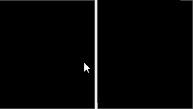
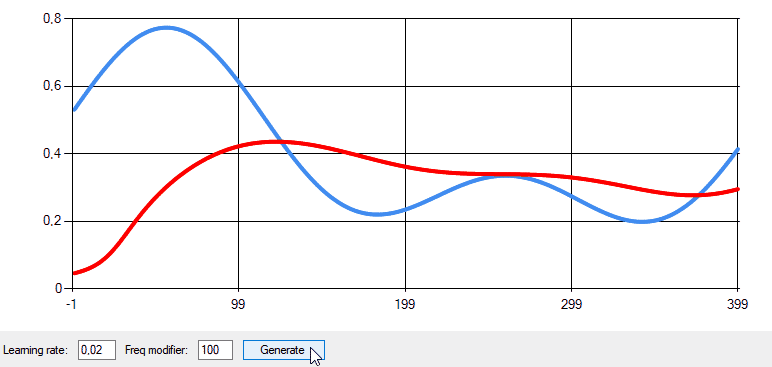

NeuralLibrary-En
NeuralLibrary is a C# DLL library from scratch with demo UI app for creating, training and validation neural network models
Used for real-time object acoustic recognition with neural networks in a
PipeMonitor
project
Handwriting Recognition Test

Approximation with Neural Network

- Building neural networks with a different structure in object oriented style
- Training neural networks with a given learning rate, iterations, epochs, input signals
- Four demo learning modes included:
- Training a model to recognize images with rotation. MNIST handwritten digits database tested (png images)
- Training a model to recognize noisy sinusoidal signals
- Drawing with a mouse in interactive mode to train a model to recognize any kind of user paintings
- Signal approximation with a neural network
- Validation with a real-time monitoring of errors, weights values and neuron outputs on charts
- Saving pre-trained models to a file at any training state
- Loading pre-trained models from files
- DLL to use neural networks in your project
- Note: currently only a multilayer perceptron is supported
Demo #1: C# Neural Network Training and Recognition of 25 Noisy Signals
Demo #2: C# Neural Network Quick MNIST Training and Recognition
Demo #3: Two C# Neural Networks Manual Training and Recognition of User Handwriting + Save/Load Model Files
Demo #4: Real-time Object State Acoustic Recognition with C# Neural Network, Microcontroller, Elastic Wave Generator and Vibration Sensor
Demo #5: Real-time Object Acoustic Recognition on a Sensitive Surface with C# Neural Network, Microcontroller, Elastic Wave Generator and Vibration Sensor